, with equality only for Gaussian wave packets.
, with equality only for Gaussian wave packets.
Statement
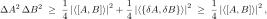
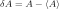
and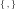
is the anticommutator (Kennard 1927; Robertson 1929).Proof
- Schwarz:
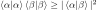
. Take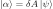
,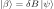
: . - Split:
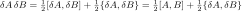
. - The commutator is anti-Hermitian (purely imaginary expectation), the anticommutator Hermitian (real expectation). Hence
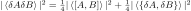
.
Minimum-uncertainty states
Equality in Schwarz needs
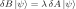
; vanishing anticommutator term needs imaginary (Heisenberg 1927). For
imaginary (Heisenberg 1927). For 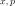
this is the first-order ODE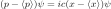
, whose solution is the Gaussian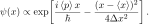
Worked example
An electron confined to
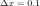
nm (an atom):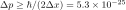
kg m/s, kinetic energy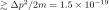
J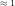
eV — the right order of atomic binding energies. For a 1 g bead localised to 1 µm,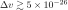
m/s: irrelevant.Engineering applications
- The standard quantum limit of interferometers and of continuous position measurement (LIGO), beaten by squeezed light.
- Time–frequency analogue
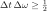
(Fourier): bandwidth of short laser pulses, transform-limited pulses, radar resolution.
Pitfall
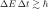
is not a case of this theorem: time is a parameter, not an operator. It means that a state changing appreciably in time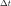
has energy spread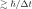
(natural linewidth).